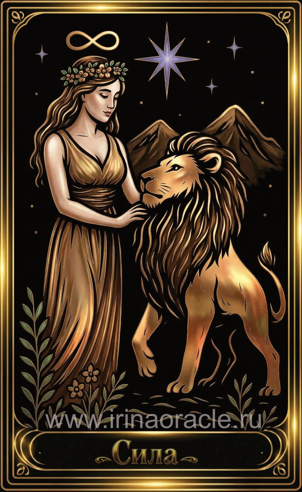

Сила — значение карты Таро
Сила — значение карты Таро

Сила — это карта внутренней мощи, мягкой уверенности и умения приручать свои инстинкты. Она символизирует не грубую силу, а спокойную, устойчивую опору внутри, которая позволяет справляться с трудностями без агрессии и давления. Это энергия принятия, терпения и уважения к своей природе.
Общее значение
Сила указывает на внутренний ресурс, который помогает преодолевать страхи, сомнения и напряжение. Это карта зрелости, эмоциональной устойчивости и способности сохранять спокойствие даже в сложных обстоятельствах.
Она говорит о том, что мягкость и терпение сейчас эффективнее, чем давление и борьба.
Любовь и отношения
В любви Сила говорит о глубокой привязанности, терпении, принятии партнёра таким, какой он есть. Это отношения, в которых важны поддержка, уважение и мягкая, но устойчивая позиция.
В тени карта может указывать на попытку «перевоспитать» партнёра, подавление его воли или скрытую борьбу за власть.
Работа и финансы
В работе Сила указывает на выдержку, настойчивость и способность справляться с нагрузкой без выгорания. Это карта, поддерживающая долгосрочные проекты, требующие терпения и внутренней устойчивости.
В финансах она говорит о стабильности, постепенном росте и необходимости не поддаваться панике или импульсивным решениям.
Здоровье
Сила указывает на хороший потенциал восстановления, выносливость и ресурс организма. Это карта, поддерживающая процессы исцеления, особенно если человек относится к себе бережно.
В тени может говорить о перенапряжении, попытке «тащить всё на себе» и необходимости позволить себе отдых.
Совет карты
Доверься своей внутренней силе. Не дави — направляй. Сила советует действовать мягко, но уверенно, не вступая в лишние конфликты и не доказывая свою правоту силой.
Твоя устойчивость и спокойствие — главный ресурс в текущей ситуации.
Теневая сторона
В тени Сила проявляется как подавление, скрытая агрессия, попытка контролировать себя или других через жёсткость и запреты. Иногда — как страх проявить свою истинную мощь.
Карта напоминает: настоящая сила не в напряжении, а в доверии к себе.